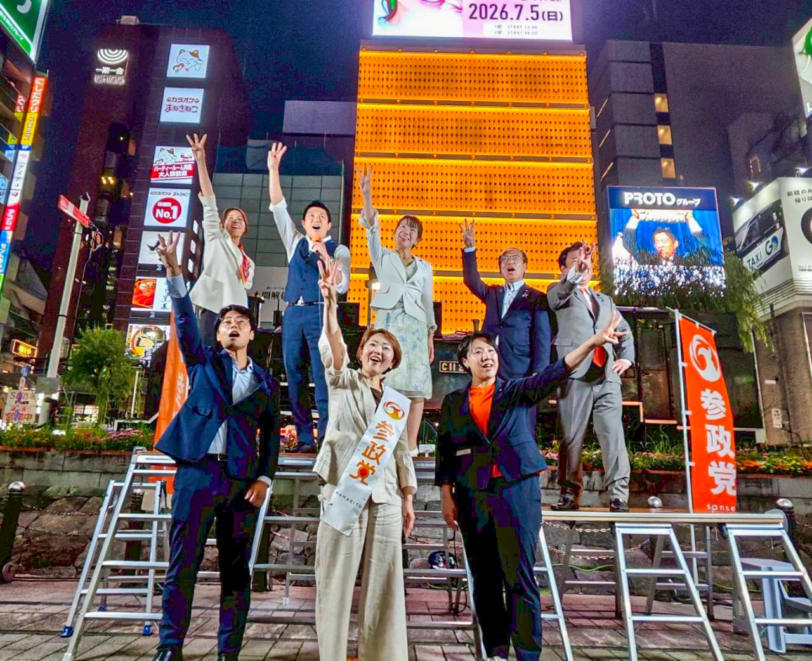

教育・人づくり
学力（テストの点数）より、学習力（自ら考え自ら学ぶ力）の高い日本人の育成
SHINAGAWA / TOKYO
「わかる」が自信になり、「好き」が才能になり、
「挑戦」が未来につながる品川へ。
参政党 品川区 区政改革委員
USUKI AI
私が実現したい品川
「わかる」が自信になり、「好き」が才能になり、
「挑戦」が未来につながる品川へ。
OUR PRINCIPLES
地域から日本の未来をつくるための、
揺るがない政治姿勢です。
学力（テストの点数）より、学習力（自ら考え自ら学ぶ力）の高い日本人の育成
科学的な物質に依存しない食と医療の実現と、それを支える循環型の環境の追求
日本の舵取りに外国勢力が関与できない体制づくり
国民負担率は35％を上限とし、減税＋社会保険料を減額
※現在の国民負担率：45.8％人手不足解消や人口減少の問題に対して、移民を受け入れるよりも国民の就労と所得向上を推進
メガソーラー・風力発電の推進による環境破壊を阻止し、再エネより次世代火力発電を推進
日々の活動

メッセージ動画
MESSAGEでお伝えしている、教育や社会への問題意識、先人への感謝、そして次の世代に誇れる品川への思いを、うすき あい本人の言葉でお届けします。
後援会のご案内
私たちの活動を支えてくださる皆さまのご参加をお待ちしています。